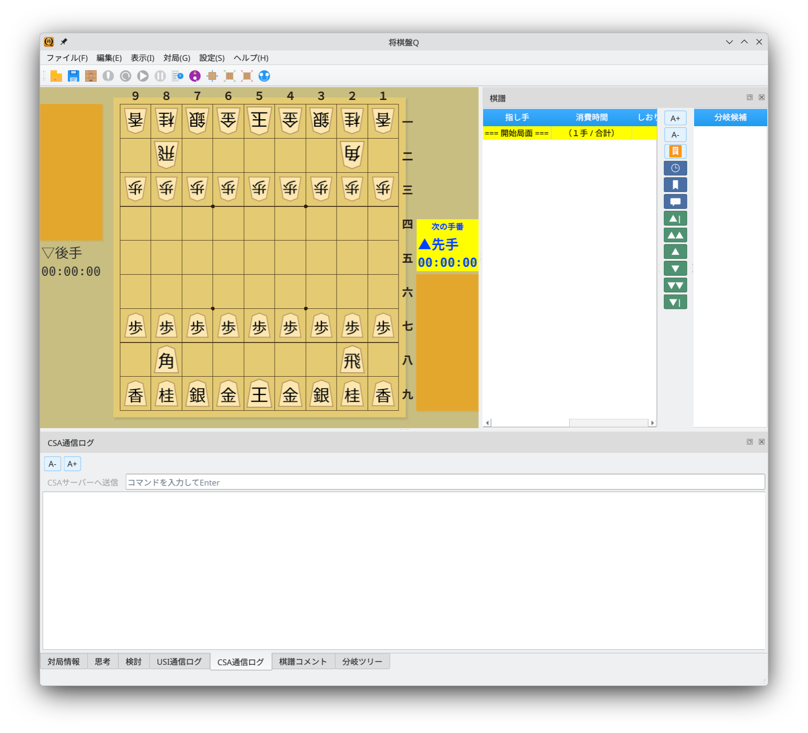
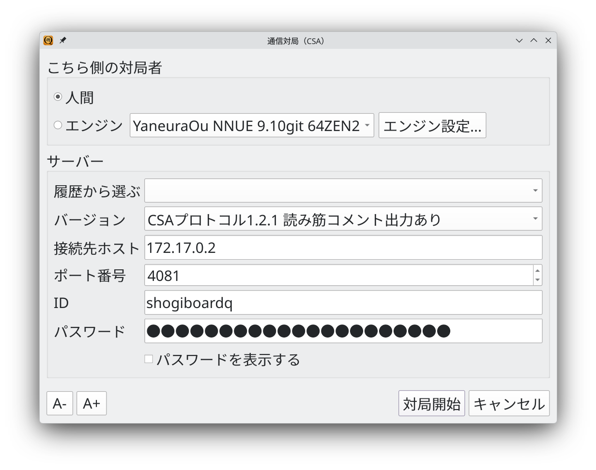
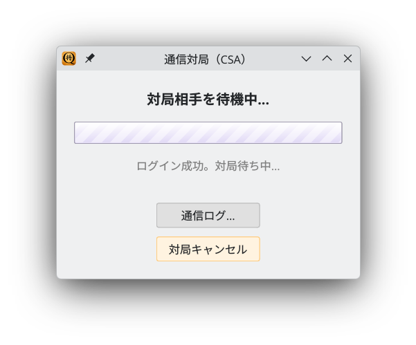
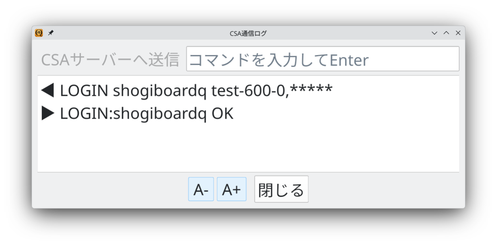
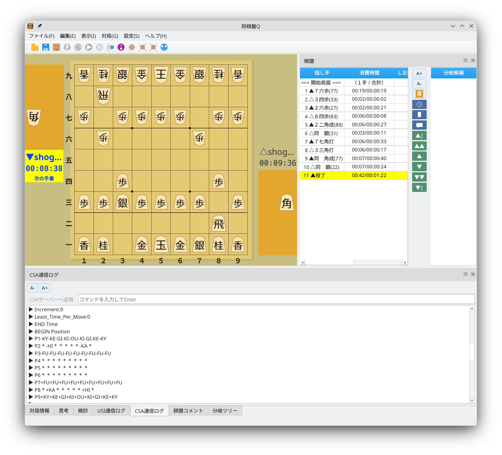

Network games on CSA-compatible servers
Screenshots show the Japanese interface unless otherwise noted.
Enter server connection details in the network game dialog
Choose Game → Network Game (CSA) to open the network game dialog.

Main window: choose Game → Network Game (CSA)
Configure the following settings.
You can also select a previous connection from the history to restore its server settings.

Network game dialog: configure the player and server connection
Connect to the server and wait for an opponent
Click Start Game to connect to the server. Once login succeeds, a waiting screen appears while the server finds an opponent.
Click Communication Log to view messages exchanged with the server. Click Cancel Game to stop waiting.

Waiting screen: looking for an opponent after a successful login
Click Communication Log to open a window showing CSA server communication in real time. You can also send commands directly to the server through the command input field.

Communication log: view server messages and send commands
Once the game starts, play moves as you would in a local game
The CSA Communication Log tab shows server communication in real time. The game record tab lists the moves, and the game clocks show the remaining time.

During a game: monitor server communication in the CSA log
Play network games on servers that support the CSA protocol